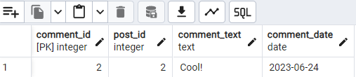
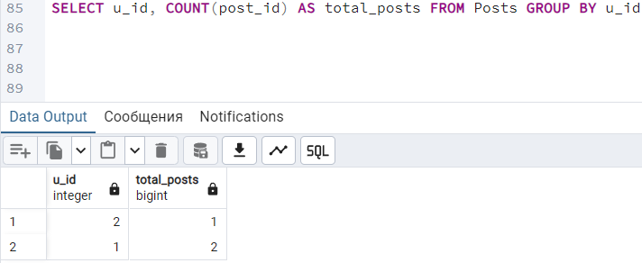

Instagram Database Project
Имя студента: Амир
Преподаватель: Танжырыкова Меруерт
Дата: Понедельник, 14 октября 2024 года
Курс: 2-й курс
Создание таблиц с помощью CREATE TABLE
На скриншоте ниже показан код создания таблиц для проекта Instagram database. Он включает таблицы Users, Posts, Comments, Followers, и Likes:
Далее подтверждение успешного выполнения запроса на создание таблиц:
Список созданных таблиц в базе данных:
Использование ALTER TABLE для создания первичных ключей
На скриншоте ниже показан код, в котором используется команда ALTER TABLE для добавления первичных ключей в таблицы Users, Posts, Comments, Followers и Likes:
Запрос был успешно выполнен, как показано на следующем скриншоте:
Создание внешних ключей с помощью ALTER TABLE
На скриншоте ниже показан код с использованием команды ALTER TABLE для добавления внешних ключей в таблицы:
Запрос был успешно выполнен, как показано на следующем скриншоте:
ER Diagram for Instagram Database
Связи между таблицами:
- Users и Posts: u_id в Posts ссылается на u_id в Users (отношение "один ко многим"). Один пользователь может создать много постов.
- Posts и Comments: post_id в Comments ссылается на post_id в Posts (отношение "один ко многим"). Один пост может иметь много комментариев.
- Users и Followers: u_id и follower_id в Followers ссылаются на u_id в Users (отношение "многие ко многим"). Один пользователь может подписываться на других и иметь подписчиков.
- Posts и Likes: post_id в Likes ссылается на post_id в Posts (один пост может иметь много лайков), а u_id в Likes ссылается на u_id в Users (один пользователь может поставить много лайков).
Удаление таблицы Likes с помощью команды DROP TABLE
На скриншоте ниже показан код с использованием команды DROP TABLE для удаления таблицы Likes:
Запрос был успешно выполнен, как показано на следующем скриншоте:
И вот визуальный результат:
Добавление записей в таблицы
На скриншоте ниже показан код для вставки данных в таблицы Users, Posts, Comments и Followers с помощью INSERT:
Запросы были успешно выполнены, как показано на следующем скриншоте:
UPDATE данных в таблице Posts
На скриншоте ниже показан код для обновления количества лайков у поста с post_id = 1(было 67, стало 68) и выборка данных после обновления:
Запрос на обновление был успешно выполнен, как показано на следующем скриншоте:
Результаты после выполнения команды SELECT, показывающие изменения в базе данных:
Просмотр комментария с comment_id = 2
На скриншоте ниже показан SQL-запрос для выборки комментария с comment_id = 2:
Результат выполнения запроса, показывающий информацию о комментарии:

Удаление комментария с помощью DELETE
На скриншоте ниже показан SQL-запрос для удаления комментария с comment_id = 2:
Запрос был успешно выполнен, как показано на следующем скриншоте:
Результат после выполнения команды DELETE, где комментарий с comment_id = 2 был удалён:

Исходное расположение данных в таблице Users
На скриншоте ниже показан результат запроса для просмотра всех записей в таблице Users:
Сортировка пользователей по дате регистрации с помощью ORDER BY
На скриншоте ниже показан результат сортировки пользователей в таблице Users по столбцу regdate в порядке убывания:
Подсчет количества постов для каждого пользователя с помощью COUNT
На скриншоте ниже показан результат выполнения запроса, который подсчитывает количество постов, созданных каждым пользователем, используя GROUP BY:

Вернуться на главную